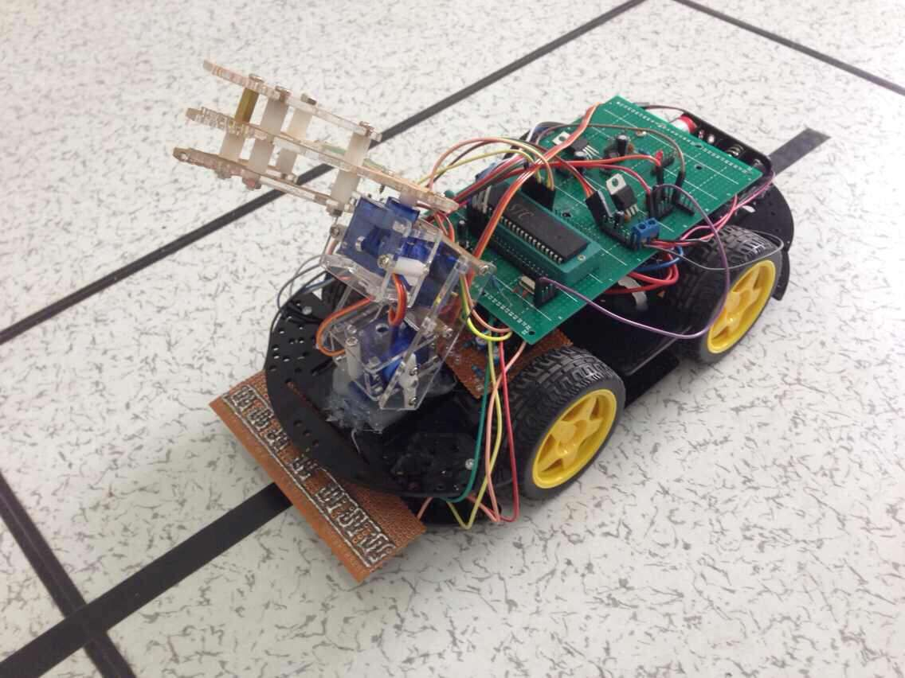
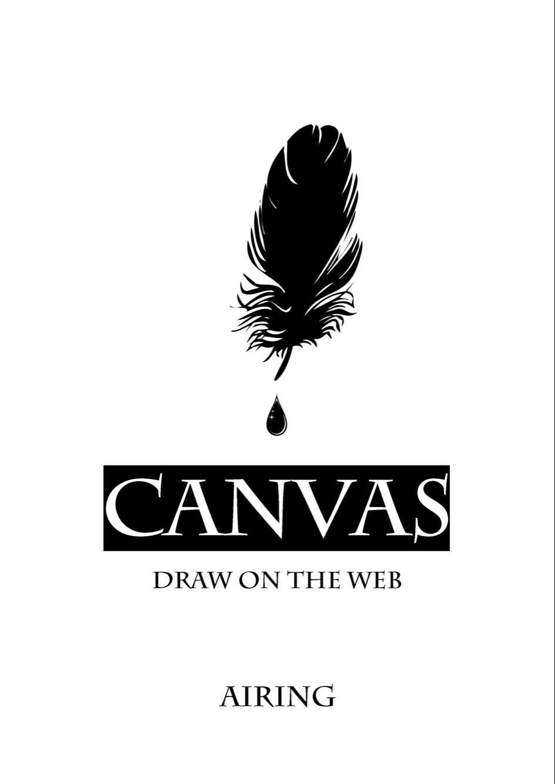
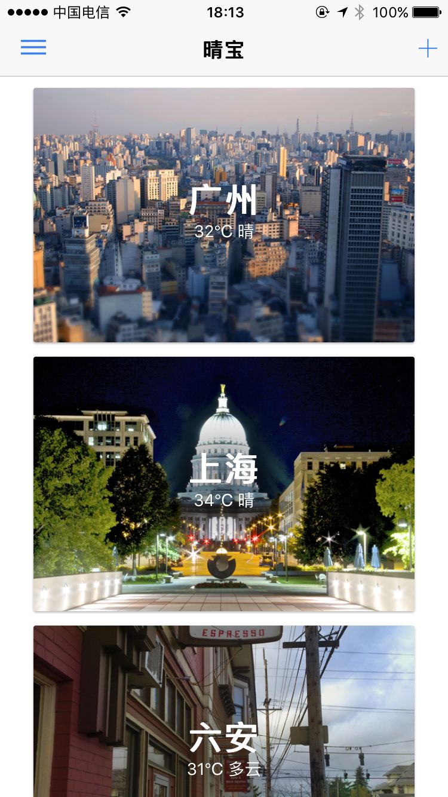
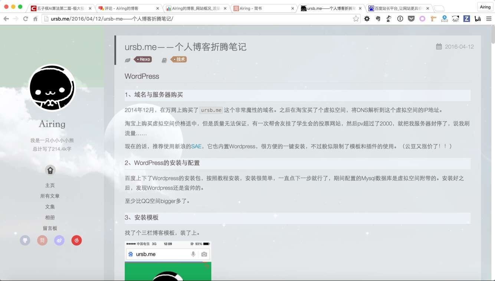
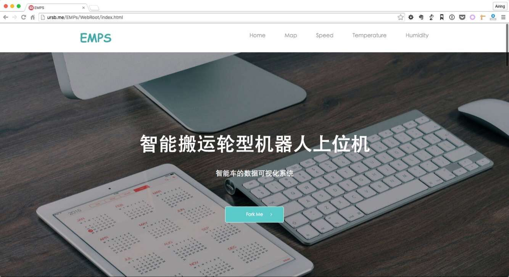
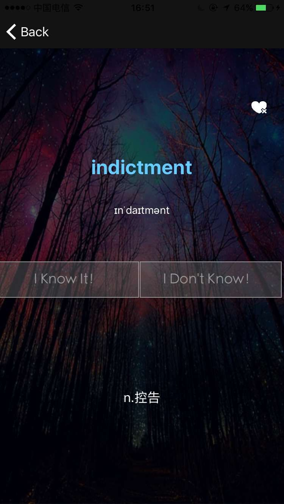
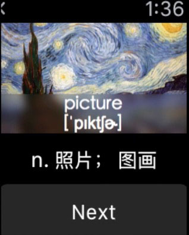
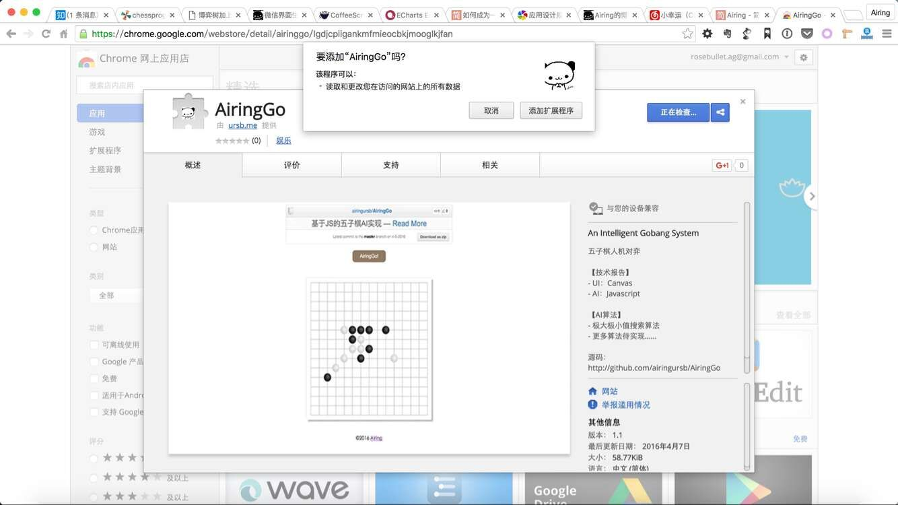
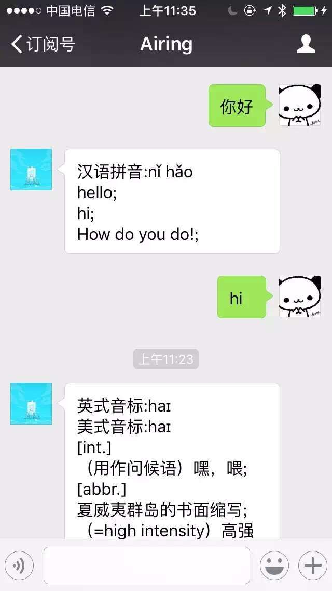
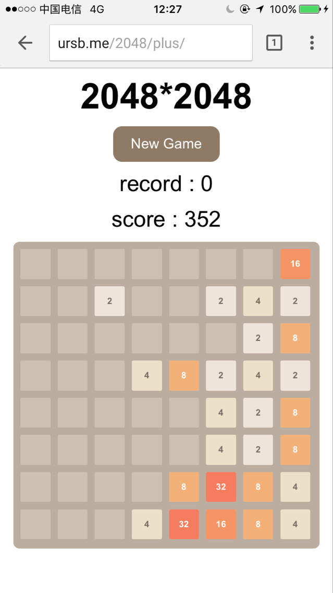

-
- Basic info. 基本信息
- 个人信息: 邓国雄 / 男 / 23岁
- 本科: 2013-2017 / 广州大学教育技术系 & 辅修软件工程
- 硕士: 2017-2019 / 中山大学哲学系
- 本科排名: 第一
- 常用ID: Airing
- Blog: ursb.me
- 知乎: Airing
- GitHub: github.com/airingursb
- Dribbble: dribbble.com/airingursb
- 人物报导:
- - 广州大学：邓国雄 | 学渣和学霸的距离，绝不是3年拿31个奖那么简单
- - IT之家：【WWDC 2019专访】IT之家对话开发者邓国雄：没有丰盈的内心，做不出好的作品
- - 广州日报：哲学系也能出编程高手！看WWDC广州获奖者亲身“教路”
- - 广州日报科教周刊 2019 年第 21 期
- 产品报导: 走近「双生小日记」，跨国团队，中文探索，让纯粹的日记更治愈
-
- Experience. 项目与工作经验
团队项目
-
双生日记 2.0：遇见另一半的美好：）（2018.4-） 源代码 视频 App Store 下载
全新的日记写作体验，匹配与你志趣相投的另一半，科学的情绪管理。基于 React Native 的 Android & iOS App，已上架 App Store & Google Play，GitHub 上 Star 300+，历史最高生活榜第7名。（同时有小程序版：双生小日记）


-
唯赛健身产品线项目（2017.8-2018.4）
为某创业公司打造的一条产品线，共有6个成熟项目。有基于Vue编写的前后台管理系统、有基于RN编写的用户APP和教练APP、有提供用户购买课程的小程序、还有数据分析与统计、以及成熟的服务端集群。
在团队中担任负责人，负责技术选型与核心代码架构编写。


-
一图（2017.4-2017.8） 项目主页 App Store 下载
高校图书馆APP，产品线拥有 iOS 端、Android 端，已上架 App Store，已对接南昌大学和广州大学，月用户2000+。
在团队中担任负责人，兼服务端开发的工作。


-
Usay（2015.6-2015.11） 项目主页
针对大学生辩论设计开发的平台，产品线拥有 iOS 端、Android 端、Web 端。
在团队中担任负责人，负责产品经理兼项目经理的工作。


-
智能搬运轮型机器人项目（2014.3-2015.7）
大学生创新项目，旨在开发出一款互联网+的多功能的智能搬运机器人，以及研究出最佳的循迹算法。
校级项目、实验中心项目，在团队中担任负责人，负责上位机的开发工作。
 -
植树网图书交换平台（2014.3-2015.7）
大学生创新项目，旨在开发出一款基于 LBS 的大学生图书交换平台。
省级项目，在团队中负责服务端的开发工作。
个人项目
-
有聊（Uchat）：基于兴趣分群的匿名聊天应用（开发中） 源代码 服务端源码
基于 React Native + Redux + react-router + express 构建的匿名聊天 APP。
-
算室：Airing的算法实验室（2017.9） 源代码 地址
基于 Typescript + express 构建的可视化算法实验室。

-
四时：闪亮亮的天气APP（2017.8） 源代码 App Store 下载
晴宝3.0版本，全靠颜值的炒鸡漂亮天气APP，最高排名 APP Store 天气类付费榜第三。

-
Sophia：哲学知识共享社区（2017.7） 源代码 地址
基于 Vue2 + Vuex + vue-router + express 构建的哲学知识共享社区。

-
双生 1.0：随机匹配异性的共享日记（2017.6） 源代码 主页 App Store 下载
基于 React Native 的 Android & iOS App，已上架 App Store，GitHub 上 Star 77，上架当天用户数突破100。


-
CANVAS——Draw on the Web（2015.11） 源代码 Demo
个人写成的电子书，每节都附带有若干 Demo，已上架极客学院 Wiki。GitHub 上 Star 879 Fork 337。
 -
微信小程序：咩咩单词（2017.2） 源代码
单词记忆类微信小程序，使用简单效果优良，该产品已经上线，不断迭代开发中。

-
晴宝：最简洁的天气应用（2016.7） 源代码 主页 App Store 下载
基于 Ionic2 构建的 Android & iOS App，已上架 App Store，GitHub 上 Star 131 Fork 39。后基于Swift重构，现已暂停维护。

-
Airing的个人博客（2014.12 - 2017.04） 源代码 Demo
Hexo主题修改，内容维护，曾日均浏览量 100+，现已放弃维护。
 -
微信聊天界面生成器H5版（2015.8） 源代码 Demo
设计简单、内容完善的微信聊天页面生成器，使用简单效果优良，GitHub 上 Star 80 Fork 7，现已放弃维护。
-
Bilibili 数据分析项目（2016.2） 博客
Python 爬虫与 Web App 数据报告——抓取并分析B站数据，开发 Web App 展示成果

-
EMPs（2016.4） 源代码 Demo
智能车可视化系统，可以在网页上查看小车的行驶路径、小车的环境温度表与湿度表、以及小车的速度变化折线图。
 -
FeedMe（2015.10 - 2016.4） 源代码 Demo
iOS 与 Apple Watch 平台的单词学习App，现已放弃维护。
  -
AiringGo（2016.4） 源代码 Demo Chrome Store 下载
基于 JS 实现的五子棋 AI，已上架 Chrome Store
 -
wechat-translator（2015.11） 源代码
基于 WeChat 公众平台的英汉辞典（Java版），关注订阅号 Airing 即可，现已放弃维护。
 -
2048 x 2048（2015.8） 源代码 Demo
使用 H5 Canvas 实现的 web app 小游戏。
 -
EqumentMS（2014.8） 源代码
使用 ASP.NET 实现的实验器材管理系统。
-
姓名大乐斗（2014.4 - 2014.6） 源代码
有趣的 PC 桌面联机小游戏（VB版）
-
- Prize. 获得奖项
共获奖项：45次，其中国家级7次，省级7次。
-
2019.05 WWDC Scholarship
-
2018.09 中山大学二等奖学金
-
2018.09 2018中国高校计算机大赛——移动应用创新赛全国总决赛一等奖（2/820）：双生日记
-
2018.08 2018中国高校计算机大赛——微信小程序开发赛全国总决赛一等奖（2/5459）：双生小日记
-
2018.07 2018中国高校计算机大赛——微信小程序开发赛华南赛区一等奖、杰出奖（1/794）：双生小日记
-
2017.09 2017中国高校计算机大赛——移动应用创新赛三等奖（10/460）：一图 主页
-
2017.06 广州大学一等奖学金
-
2017.06 广州大学优秀学生
-
2017.06 广州大学优秀实习生
-
2017.01 “挑战杯”广州大学校赛三等奖：Usay
-
2016.11 2016全国大学生移动应用创新赛CMAIT优胜奖：FeedMe 主页
-
2016.11 第25届广东省高校杯软件作品设计竞赛一等奖：FeedMe 主页
-
2016.09 国家奖学金
-
2016.09 广东省大学生计算机设计竞赛一等奖：激光雷达云地理信息采集网站 源码
-
2016.09 广东省大学生计算机设计竞赛二等奖：RPG游戏课件的设计与开发
-
2016.09 广东省大学生计算机设计竞赛三等奖：养成类单词学习APP
-
2016.09 广东省大学生计算机设计竞赛三等奖：植书网
-
2016.08 “ADI杯”广东省大学生电子设计竞赛二等奖：基于C/S闭环控制的智能药柜系统主页
-
2016.07 第十一届全国大学生“恩智浦”杯智能汽车竞赛，华南赛区摄像头组二等奖
-
2016.06 广州市优秀学生
-
2015.06 第二届广州创客马拉松第三名
-
2015.06 第二届广州创客马拉松最佳交互设计奖

-
2016.06 广州大学第一届计算机设计大赛，个人提交14项作品参赛
获一等奖1项，二等奖4项，三等奖6项，优秀奖3项。
-
2014.10 广州大学一等奖学金
-
2014.10 广州大学优秀学生
-
2014.11 广州大学教育学院多媒体课件比赛专业组一等奖
-
2015.10 广州大学二等奖学金
-
2015.10 广州大学优秀学生
-
2016.10 广州大学优秀学生
-
2015.11 广州大学教育学院多媒体课件比赛专业组一等奖
- Skill. 技能清单
Web 前端
-
HTML / CSS
能够编写语义化的 HTML，模块化的 CSS，完成较复杂的布局
-
JavaScript
熟悉原生 Javascript，能脱离 jQuery 等类库编码，懂得 ES6 规范
能运用模块化、面向对象的方式编程
会使用 Gulp、Webpack 等前端构建工具
-
Vue
熟练使用 vue-cil + vue2 + vuex + vue-router 构建前端项目。
-
React
能够使用 react + redux + react-router 构建前端项目。
移动开发
-
React Native
能熟练运用 React Native 开发 Android 与 iOS 应用。
-
Swift
能够使用 Swift 语言进行 iOS 开发。能实现基本的动画与业务需求。
-
WatchKit
能够使用 Swift 开发简单的 Apple Watch 应用。
-
微信开发
了解微信小程序开发，以及微信接口设计、开发和调试工作。
-
Angular2
能运用 Ionic2 开发基本的 Android 与 iOS 应用。
-
Cocos2d JS
能运用 Cocos2d JS 开发简单的游戏。
网络开发
-
Linux
熟悉 Linux 开发环境、 Linux 服务器环境搭建部署
-
Nodejs
熟练使用 Express、Koa 等框架构建后端项目。
-
Java
了解 Struts、Hibernate、Spring 框架的原理与使用。
-
Python
了解 Flask 与 Django 框架，能使用 Django 自主建站。
熟悉 requests 与 Scrapy，能够熟练实现网络请求与制作网络爬虫。
数据分析
-
R & Python & SPSS
熟悉 R 语言的使用
了解 pandas 与 numpy 的使用
了解 SPSS 的使用
热衷 kaggle，撰写过关注度上千的数据报告
-
统计学
了解统计学的相关内容，会使用一定的统计方法
UI设计与多媒体开发
-
Axure
熟悉 Axure 、墨刀 与 Balsamiq Mockups 等原型制作工具的使用。
-
Sketch
能熟练使用 Sketch 进行 Web 端、移动端的 UI 设计与标注。
独立设计过多个作品，具备一定的设计思想与美感。
-
Photoshop
能够使用 Photoshop 进行图片编辑。
-
Flash
能够熟练使用 Flash 制作产品宣传动画。
-
Premiere
能够使用 Premiere 与 Final Cut Pro 进行影片编辑。

邓国雄的简历
"眼存星海，心怀宇宙。"
目前在鹅厂，拒绝猎头。本网站仅用于记录个人项目经历。-
- Contact. 联系方式
- 邮箱: airing@ursb.me
- 微信: gx-deng（建议邮箱联系）
- QQ: 361411192
-
- Application. 应聘岗位
- 项目经理
- Web前端工程师
-
- Tech. 技能点
JavaScriptPythonJavaSwiftDesignHardware
我是一个充满活力、对编程极其热爱的软件开发工程师。
我目前正在寻找项目经理 or 前端开发的岗位，希望借此机会为贵司献上我的一点绵薄之力，快招我到碗里来吧！
目前在鹅厂，拒绝猎头。本网站仅用于记录个人项目经历。